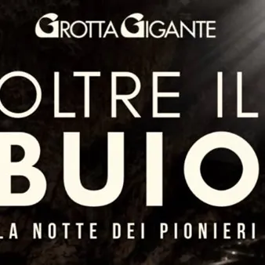

sab 31 ott
Grotta Gigante - Oltre il buio. La notte dei pionieri
La Grotta Gigante ti invita a vivere un’esperienza fuori dall’ordinario: un viaggio nelle profondità della Grande Caverna, dove la luce si farà discreta e il buio tornerà a essere il vero protagonista. Niente mostri, niente effetti speciali: solo la meraviglia della grotta, la…
 Indicazioni
Indicazioni
- Costi e prenotazioni
- Costo non indicato · Prenotazione non indicata
- Programma
- Programma da verificare. Apri la fonte ufficiale per orari e possibili aggiornamenti.
- In caso di maltempo
- Nessuna indicazione specifica pubblicata.
- Note
- Acquisito automaticamente dalla fonte.
L’EVENTO
Descrizione completa
La Grotta Gigante ti invita a vivere un’esperienza fuori dall’ordinario: un viaggio nelle profondità della Grande Caverna, dove la luce si farà discreta e il buio tornerà a essere il vero protagonista. Niente mostri, niente effetti speciali: solo la meraviglia della grotta, la storia di chi l’ha esplorata e il fascino autentico dell’oscurità. La discesa comincerà lungo i 500 gradini che conducono nel cuore della grotta, accompagnati soltanto dalle luci segnapassi che delineano il percorso. Un’atmosfera insolita, in cui ogni passo svela scorci familiari sotto una luce completamente nuova. Ci fermeremo poi ad ammirare la Grande Caverna e a ripercorrere alcune tappe della storia delle sue esplorazioni. Corde, scalette e attrezzature speleologiche ci riporteranno ai tempi in cui scendere nel mondo sotterraneo richiedeva ingegno, abilità e spirito d’avventura.
Scenderemo ancora, fino al cuore della grotta, dove ci attenderà un’esperienza difficile da raccontare a parole. Siete pronti a spegnere ogni luce e vivere la grotta nella sua forma più autentica?
Proseguiremo quindi alla scoperta di una delle antiche protagoniste delle esplorazioni sotterranee: la lampada a carburo. Ne vedremo da vicino il funzionamento, riscoprendo la luce che per generazioni ha accompagnato gli speleologi nelle profondità della Terra.
Per una sera, la Grotta Gigante sarà diversa da come l’hai sempre conosciuta.
Sabato 31 ottobre 2026 Due discese: ore 16:30 e 17:30
PREZZI EVENTO: Adulti: € 15.00; Ragazzi dai 6 ai 18 anni: € 8.00; Bambini fino ai 5 anni: gratuito
Posti limitati per ciascun turno!
PRENOTAZIONI SOLO VIA WHATSAPP Scrivi al +39 329 6877903, indicando: “Oltre il buio” - Numero di adulti e bambini -Orario scelto: 16:30 oppure 17:30
Questo Halloween, scopri ciò che il buio custodisce
IL PROGRAMMA
Programma e orari
Appuntamenti raccolti dalle fonti elencate. Dove manca un orario, non è ancora disponibile in questa scheda.
Programma pubblicato
- Dal 2026-10-31 al 2026-10-31
INFORMAZIONI UTILI
Prima di partire
- Controllare la fonte prima di partire.
ORGANIZZAZIONE